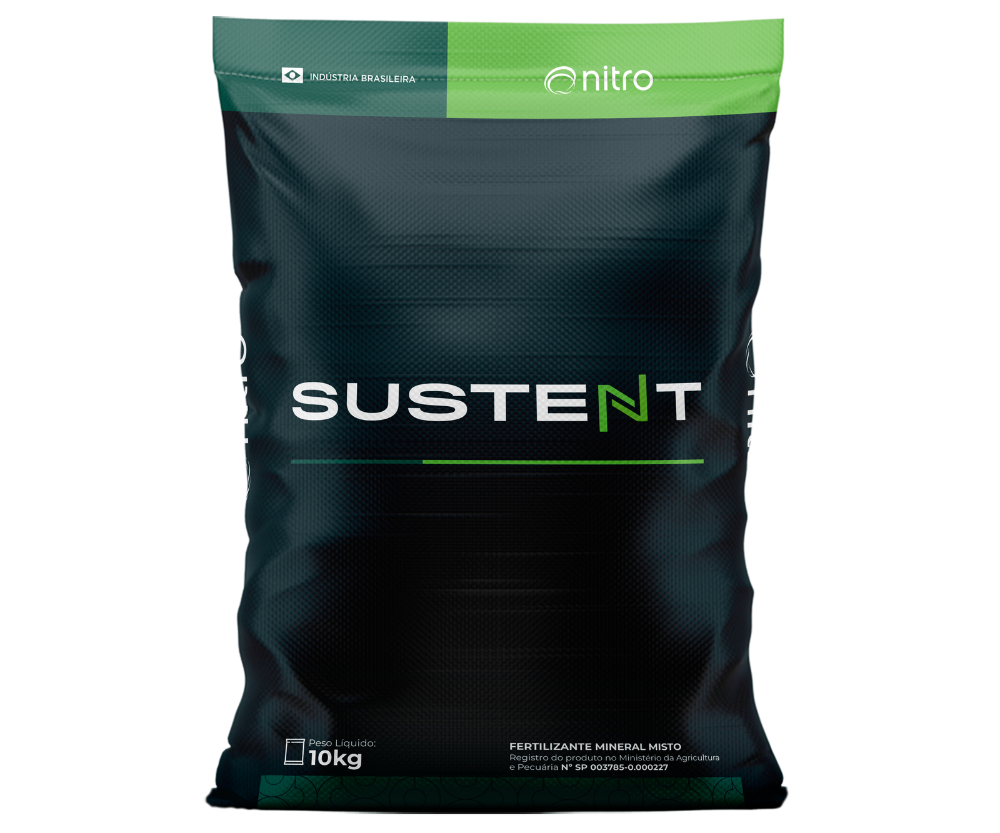
Movidos por ciência, tecnologia e proximidade com o campo para entregar resultados consistentes e práticos na lavoura.
Complexos de ponta no Brasil, Uruguai e Estados Unidos, exportando alta tecnologia química para mais de 70 países.
Estrutura moderna, capital sólido e autossuficiência energética garantindo segurança total de fornecimento ao produtor.
"Transformamos desafios em produtividade sustentável através de especialidades químicas e soluções biológicas de alto impacto."
MANEJO BIOLÓGICO E FERTILIDADE INTEGRADA PARA ALTAS PRODUTIVIDADES
Fertilizante para nutrição de enxofre via solo com alta eficiência, apresentando disponibilização gradual do sulfato, atendendo a exigência crescente do nutriente ao longo do ciclo da cultura, reduzindo suas perdas e aumentando o teor do solo.
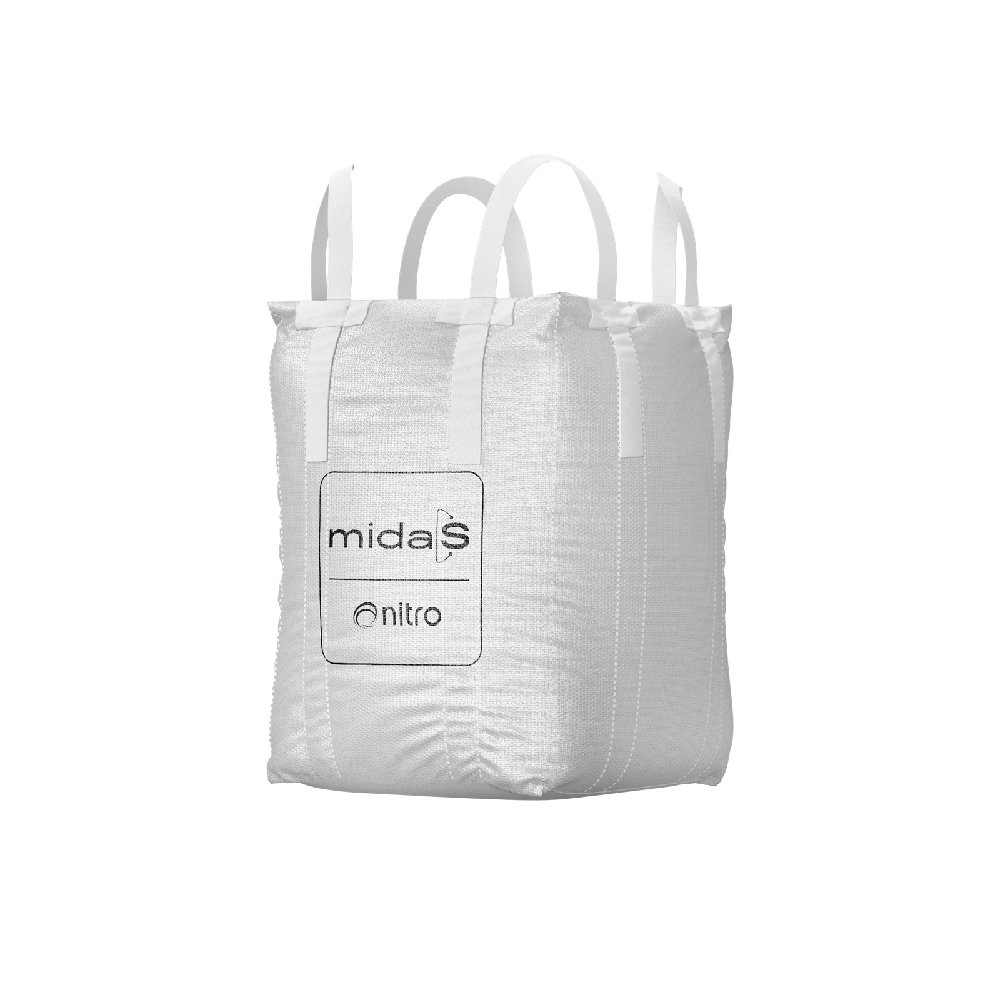
Fertilizante concentrado e de liberação gradual de Boro (B), Cobre (Cu), Manganês (Mn), Zinco (Zn) e Enxofre (S), com fornecimento contínuo ao longo do ciclo de crescimento das culturas, que reduz perdas e aumenta os níveis dos nutrientes no solo.
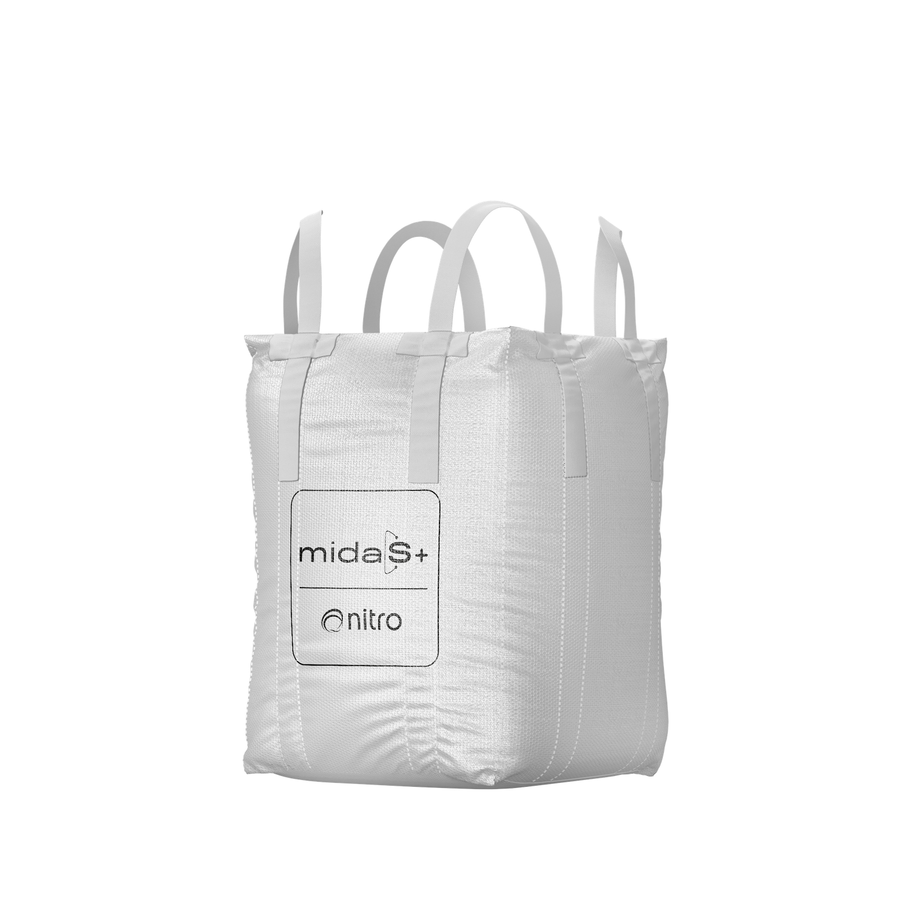
ESTABELECIMENTO VIGOROSO, TOLERÂNCIA A ESTRESSES E MÁXIMA EFICIÊNCIA BIOLÓGICA
Solução completa de nutrição e fisiologia para TS e sulco de plantio de leguminosas. Promove um estabelecimento inicial vigoroso, reduz os efeitos dos estresses no início do ciclo e estimula a nodulação e FBN com total segurança e comodidade.
Solução que maximiza a performance fisiológica e nutricional das plantas. Atua em processos essenciais como o metabolismo do nitrogênio, FBN e fotossíntese, potencializando a produtividade e a saúde do cultivo.
MICRONUTRIENTES 100% QUELATIZADOS E COMPLEXOS DE ALTA ABSORÇÃO
A Linha Compat foi desenvolvida para proporcionar nutrição foliar de alto desempenho através de micronutrientes 100% quelatizados. Garante máxima eficiência na absorção dos nutrientes, além de segurança e estabilidade absoluta nas misturas em tanque.
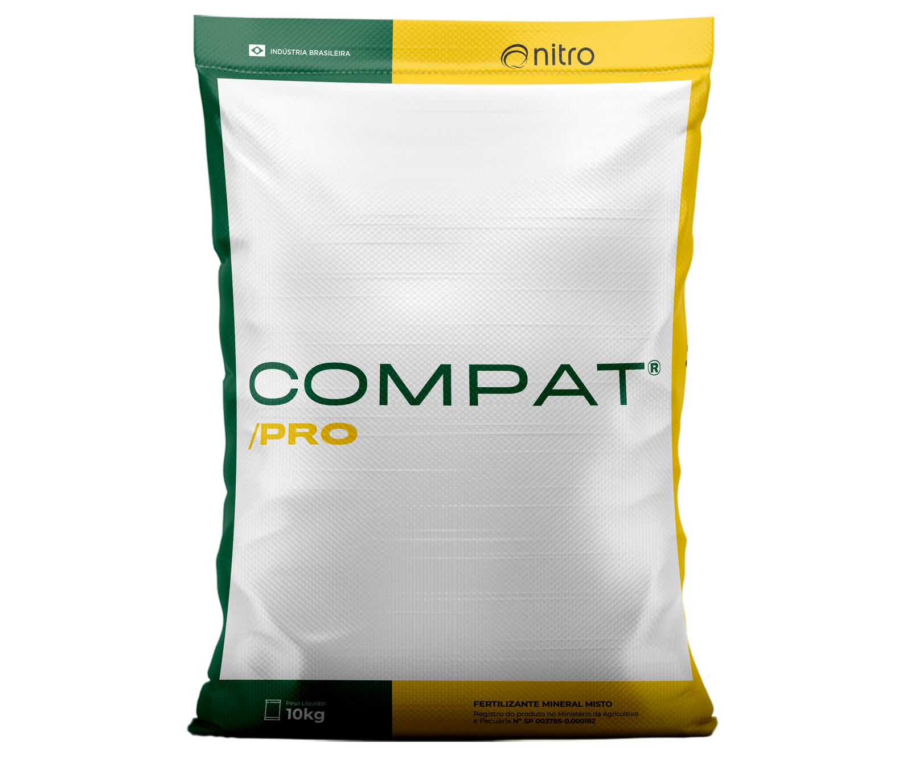
Solução de Cobre quelatizado que garante absorção imediata sem causar fitotoxicidade nas folhas. A formulação confere alta estabilidade de calda e compatibilidade com defensivos agrícolas.
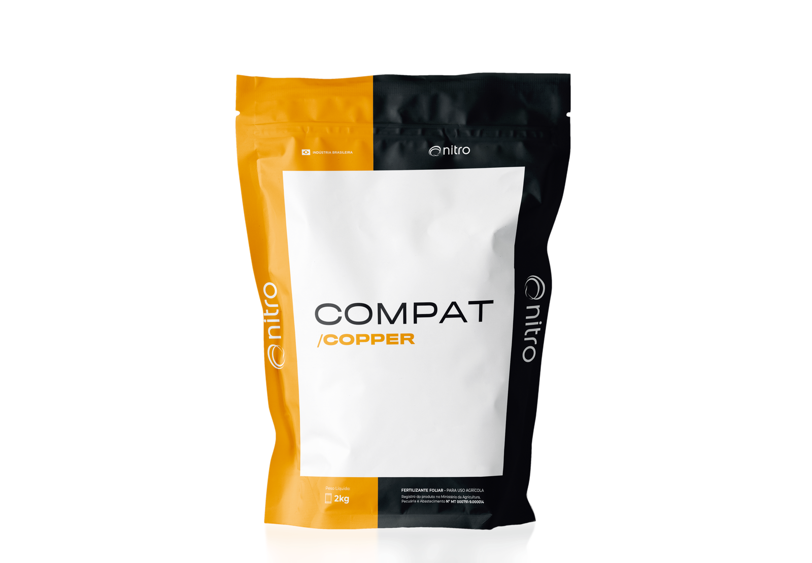
Ferro 100% quelatizado com agentes de alta afinidade, garantindo que o elemento permaneça em forma solúvel e ativa, permitindo rápida assimilação celular e síntese de clorofila.
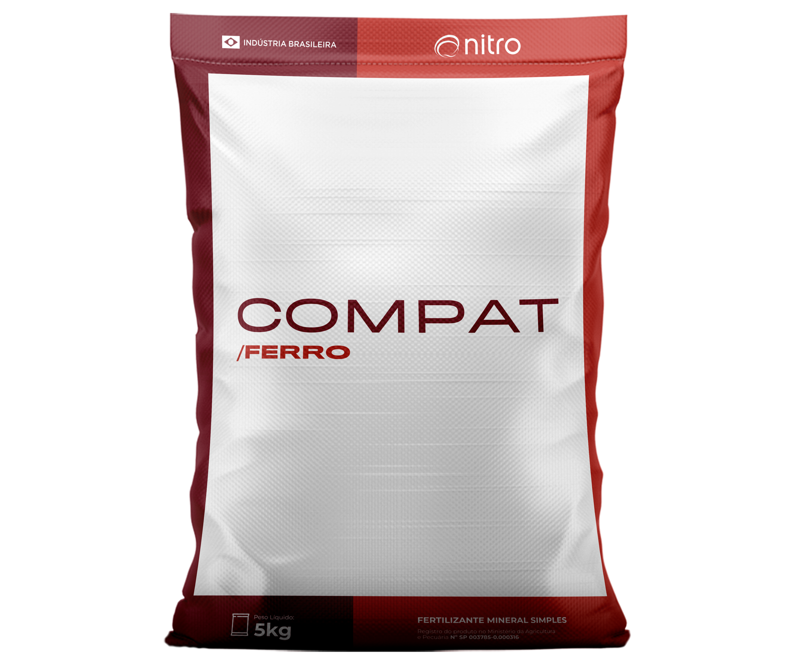
Zinco de alta pureza e 100% quelatizado para nutrição foliar precisa. Essencial para a síntese de auxinas (fitormônios de crescimento), expansão foliar e desenvolvimento dos tecidos novos.
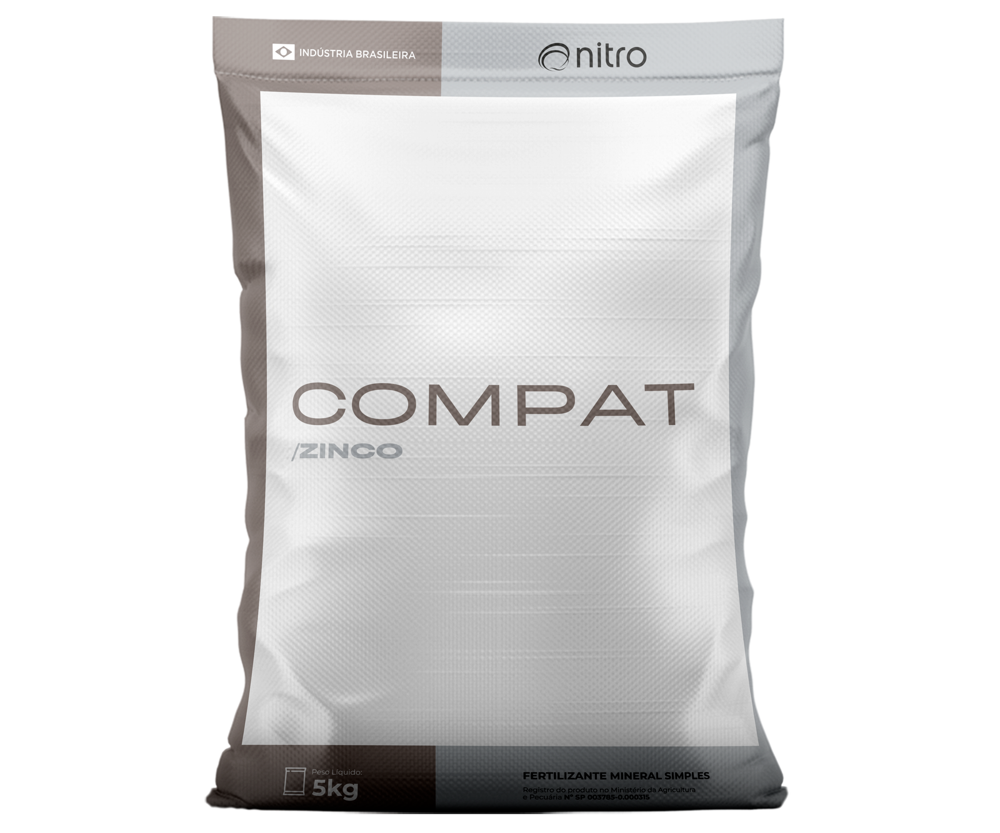
Desenvolvido para atender as demandas nutricionais via folha através de complexos de macro e micronutrientes, complexantes e quelatizantes. Garante nutrição eficiente, equilibrada e segura nos períodos críticos.
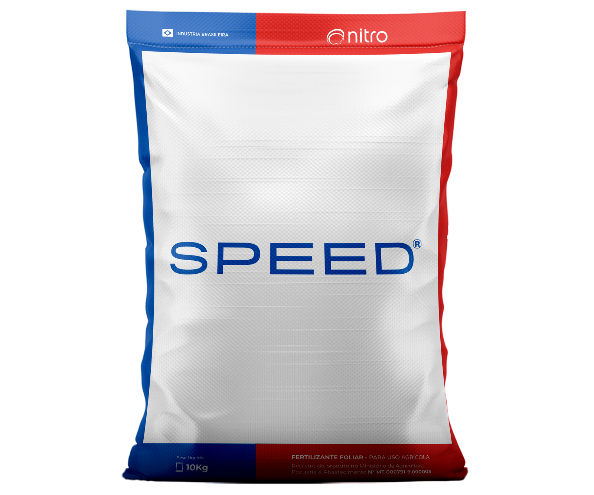
Fórmula balanceada com ênfase em Zinco, Boro e Manganês para impulsionar a taxa de crescimento vegetativo, ramificação e expansão da área foliar fotossinteticamente ativa.
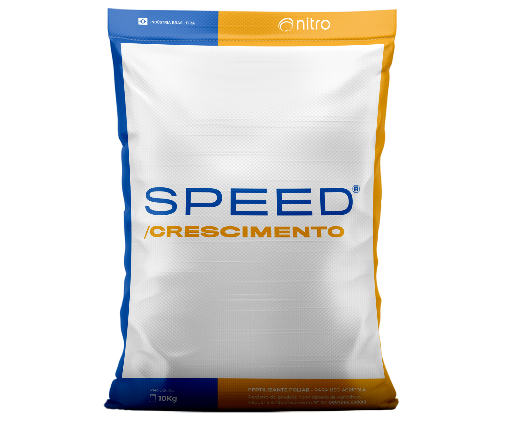
Complexo nutricional projetado especialmente para as altas exigências metabólicas da cana-de-açúcar, promovendo perfilhamento homogêneo, acúmulo de biomassa e síntese de sacarose.
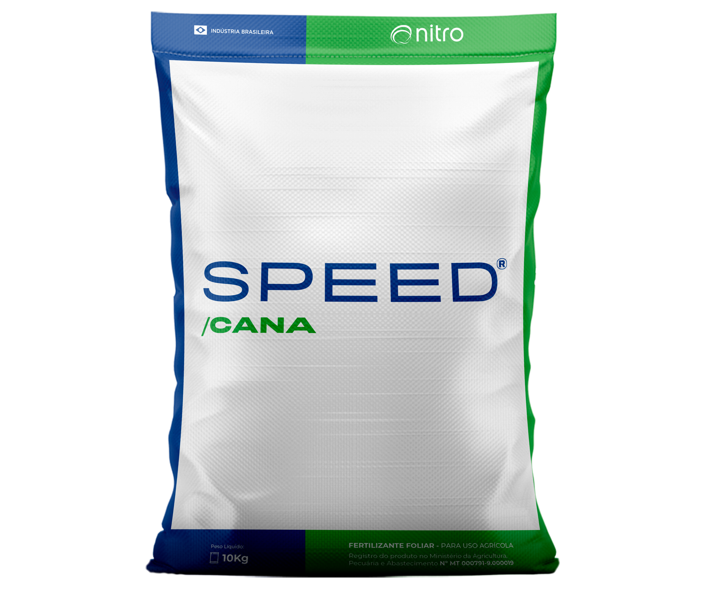
Formulado para atender a dinâmica nutricional intensa do algodoeiro. Proporciona retenção máxima de estruturas reprodutivas, vigor e enchimento equilibrado de maçãs.
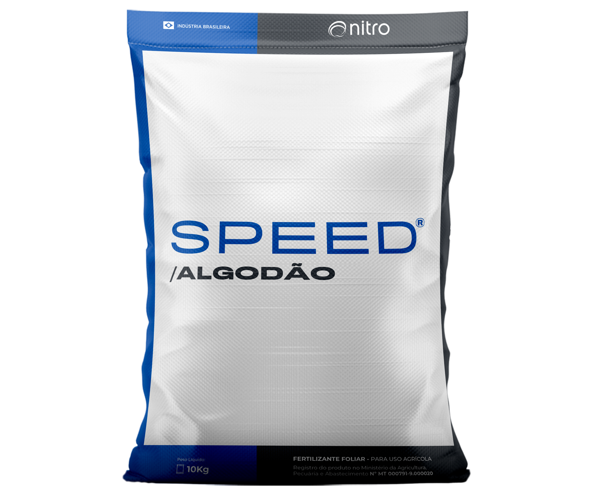
Solução multi-nutricional que combina elementos essenciais em proporções sinérgicas para lavouras de alto investimento e recuperação ágil de cultivos sob estresse.
Solução desenvolvida sob medida para a citricultura moderna. Nutre os fluxos vegetativos, estimula o pegamento floral e melhora o tamanho, brix e uniformidade dos frutos.
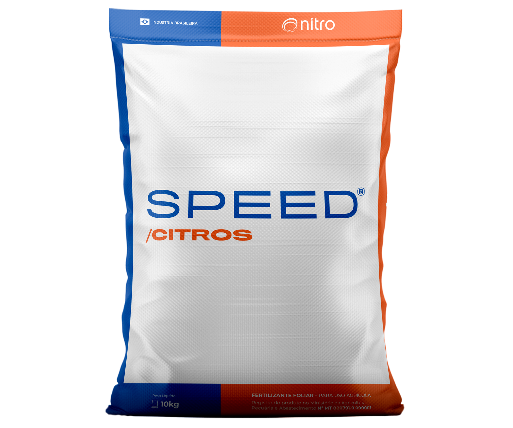
MÁXIMA EFICIÊNCIA OPERACIONAL, CONTROLE DE DERIVA E DEPOSIÇÃO NO ALVO
Adjuvante especial para aplicações de alta performance. Indicado para caldas complexas, menor volume de aplicação e máximo controle de deriva. Atua na emulsificação da calda, potencializa o efeito de defensivos e biológicos e garante deposição precisa sobre o alvo.
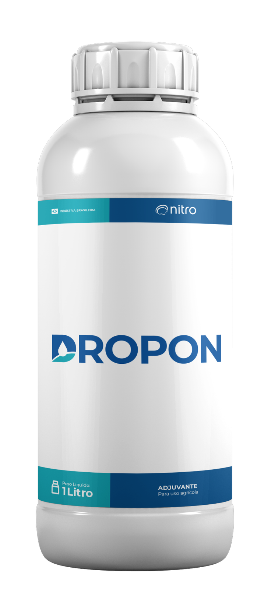